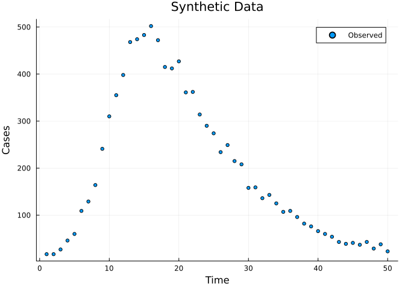
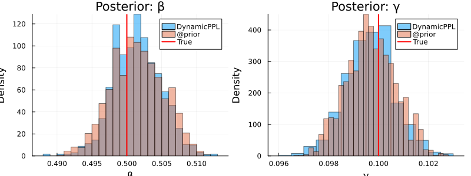

DynamicPPL Integration
Introduction
Odin.jl integrates with the DynamicPPL.jl probabilistic programming framework, enabling richer prior specifications and compatibility with the Turing.jl ecosystem. This opens up:
- Hierarchical priors — parameter-to-parameter dependencies that go beyond independent priors.
- MCMCChains diagnostics — ESS, R̂, and trace plots via a single
to_chains()call. - LogDensityProblems interface — interoperability with AdvancedHMC.jl and other sampling packages.
We build on the inference workflow from Vignette 06, fitting an SIR model to synthetic incidence data.
Setup
using Odin
using DynamicPPL
using Distributions
using MCMCChains
using Plots
using Statistics
using LinearAlgebra: diagm
using RandomDefine the Model
We use a deterministic ODE-based SIR, with the infected compartment named Inf2 to avoid shadowing Julia’s I (the UniformScaling identity).
sir = @odin begin
deriv(S) = -beta * S * Inf2 / N
deriv(Inf2) = beta * S * Inf2 / N - gamma * Inf2
deriv(R) = gamma * Inf2
initial(S) = N - I0
initial(Inf2) = I0
initial(R) = 0
cases = data()
cases ~ Poisson(Inf2 + 1e-6)
beta = parameter(0.5)
gamma = parameter(0.1)
I0 = parameter(10)
N = parameter(1000)
endOdin.DustSystemGenerator{var"##OdinModel#277"}(var"##OdinModel#277"(3, [:S, :Inf2, :R], [:beta, :gamma, :I0, :N], true, false, true, false, false, Dict{Symbol, Array}()))Generate Synthetic Data
We simulate the ODE to get true infected counts, then generate noisy Poisson observations.
true_pars = (beta=0.5, gamma=0.1, I0=10.0, N=1000.0)
times = collect(0.0:1.0:50.0)
result = simulate(sir, true_pars; times=times, seed=1)
true_infected = result[2, 1, 2:end] # Inf2 compartment
Random.seed!(42)
observed = [rand(Poisson(max(x, 1e-6))) for x in true_infected]
data = ObservedData(
[(time=Float64(t), cases=Float64(c)) for (t, c) in zip(times[2:end], observed)]
)
plot(times[2:end], observed, seriestype=:scatter,
xlabel="Time", ylabel="Cases", title="Synthetic Data",
label="Observed", markersize=3)
Deterministic Likelihood
uf = Likelihood(sir, data; time_start=0.0)
pk = Packer([:beta, :gamma]; fixed=(I0=10.0, N=1000.0))
likelihood = as_model(uf, pk)
ll_true = likelihood([0.5, 0.1])
println("Log-likelihood at true parameters: ", round(ll_true, digits=2))Log-likelihood at true parameters: -183.87Basic Priors with dppl_prior
The dppl_prior function converts a DynamicPPL @model into a MontyModel that slots directly into Odin’s inference pipeline.
DynamicPPL approach
DynamicPPL.@model function sir_prior()
beta ~ Gamma(2.0, 0.25)
gamma ~ Gamma(2.0, 0.05)
end
prior_dppl = dppl_prior(sir_prior())MontyModel{Odin.var"#144#145"{Model{typeof(sir_prior), (), (), (), Tuple{}, Tuple{}, DefaultContext, false}, Odin.var"#_make_nt_builder##2#_make_nt_builder##3"{Vector{Symbol}}, Int64}, Odin.var"#146#147"{Odin.var"#144#145"{Model{typeof(sir_prior), (), (), (), Tuple{}, Tuple{}, DefaultContext, false}, Odin.var"#_make_nt_builder##2#_make_nt_builder##3"{Vector{Symbol}}, Int64}}, Odin.var"#148#149"{Model{typeof(sir_prior), (), (), (), Tuple{}, Tuple{}, DefaultContext, false}, Int64}, Matrix{Float64}}(["beta", "gamma"], Odin.var"#144#145"{Model{typeof(sir_prior), (), (), (), Tuple{}, Tuple{}, DefaultContext, false}, Odin.var"#_make_nt_builder##2#_make_nt_builder##3"{Vector{Symbol}}, Int64}(Model{typeof(sir_prior), (), (), (), Tuple{}, Tuple{}, DefaultContext, false}(sir_prior, NamedTuple(), NamedTuple(), DefaultContext()), Odin.var"#_make_nt_builder##2#_make_nt_builder##3"{Vector{Symbol}}([:beta, :gamma]), 2), Odin.var"#146#147"{Odin.var"#144#145"{Model{typeof(sir_prior), (), (), (), Tuple{}, Tuple{}, DefaultContext, false}, Odin.var"#_make_nt_builder##2#_make_nt_builder##3"{Vector{Symbol}}, Int64}}(Odin.var"#144#145"{Model{typeof(sir_prior), (), (), (), Tuple{}, Tuple{}, DefaultContext, false}, Odin.var"#_make_nt_builder##2#_make_nt_builder##3"{Vector{Symbol}}, Int64}(Model{typeof(sir_prior), (), (), (), Tuple{}, Tuple{}, DefaultContext, false}(sir_prior, NamedTuple(), NamedTuple(), DefaultContext()), Odin.var"#_make_nt_builder##2#_make_nt_builder##3"{Vector{Symbol}}([:beta, :gamma]), 2)), Odin.var"#148#149"{Model{typeof(sir_prior), (), (), (), Tuple{}, Tuple{}, DefaultContext, false}, Int64}(Model{typeof(sir_prior), (), (), (), Tuple{}, Tuple{}, DefaultContext, false}(sir_prior, NamedTuple(), NamedTuple(), DefaultContext()), 2), [0.0 Inf; 0.0 Inf], Odin.MontyModelProperties(true, true, false, false))Equivalent @prior approach
prior_monty = @prior begin
beta ~ Gamma(2.0, 0.25)
gamma ~ Gamma(2.0, 0.05)
endMontyModel{var"#10#11", var"#12#13"{var"#10#11"}, var"#14#15", Matrix{Float64}}(["beta", "gamma"], var"#10#11"(), var"#12#13"{var"#10#11"}(var"#10#11"()), var"#14#15"(), [0.0 Inf; 0.0 Inf], Odin.MontyModelProperties(true, true, false, false))Both produce a MontyModel with the same density. Let’s verify:
θ_test = [0.4, 0.08]
println("DynamicPPL prior density: ", round(prior_dppl(θ_test), digits=4))
println("@prior density: ", round(prior_monty(θ_test), digits=4))DynamicPPL prior density: 2.122
@prior density: 2.122Hierarchical Priors
DynamicPPL’s real power is expressing parameter-to-parameter dependencies. Here we define R₀ = β/γ as a latent quantity and derive β from it:
DynamicPPL.@model function hierarchical_prior()
log_R0 ~ Normal(log(2.5), 0.5)
gamma ~ Gamma(2.0, 0.05)
beta ~ LogNormal(log_R0 + log(gamma), 0.1)
end
prior_hier = dppl_prior(hierarchical_prior())
println("Hierarchical prior parameters: ", prior_hier.parameters)Hierarchical prior parameters: ["log_R0", "gamma", "beta"]Note that log_R0 becomes a sampled parameter alongside gamma and beta. The likelihood packer only maps beta and gamma to the model, so we need to adjust the packer to include log_R0:
pk_hier = Packer([:log_R0, :gamma, :beta]; fixed=(I0=10.0, N=1000.0))
likelihood_hier = as_model(uf, pk_hier)
posterior_hier = likelihood_hier + prior_hierMontyModel{Odin.var"#monty_model_combine##0#monty_model_combine##1"{MontyModel{Odin.var"#dust_likelihood_monty##2#dust_likelihood_monty##3"{DustUnfilter{var"##OdinModel#277", @NamedTuple{cases::Float64}}, MontyPacker}, Odin.var"#dust_likelihood_monty##4#dust_likelihood_monty##5"{Odin.var"#dust_likelihood_monty##2#dust_likelihood_monty##3"{DustUnfilter{var"##OdinModel#277", @NamedTuple{cases::Float64}}, MontyPacker}}, Nothing, Nothing}, MontyModel{Odin.var"#144#145"{Model{typeof(hierarchical_prior), (), (), (), Tuple{}, Tuple{}, DefaultContext, false}, Odin.var"#_make_nt_builder##2#_make_nt_builder##3"{Vector{Symbol}}, Int64}, Odin.var"#146#147"{Odin.var"#144#145"{Model{typeof(hierarchical_prior), (), (), (), Tuple{}, Tuple{}, DefaultContext, false}, Odin.var"#_make_nt_builder##2#_make_nt_builder##3"{Vector{Symbol}}, Int64}}, Odin.var"#148#149"{Model{typeof(hierarchical_prior), (), (), (), Tuple{}, Tuple{}, DefaultContext, false}, Int64}, Matrix{Float64}}}, Odin.var"#monty_model_combine##2#monty_model_combine##3"{MontyModel{Odin.var"#dust_likelihood_monty##2#dust_likelihood_monty##3"{DustUnfilter{var"##OdinModel#277", @NamedTuple{cases::Float64}}, MontyPacker}, Odin.var"#dust_likelihood_monty##4#dust_likelihood_monty##5"{Odin.var"#dust_likelihood_monty##2#dust_likelihood_monty##3"{DustUnfilter{var"##OdinModel#277", @NamedTuple{cases::Float64}}, MontyPacker}}, Nothing, Nothing}, MontyModel{Odin.var"#144#145"{Model{typeof(hierarchical_prior), (), (), (), Tuple{}, Tuple{}, DefaultContext, false}, Odin.var"#_make_nt_builder##2#_make_nt_builder##3"{Vector{Symbol}}, Int64}, Odin.var"#146#147"{Odin.var"#144#145"{Model{typeof(hierarchical_prior), (), (), (), Tuple{}, Tuple{}, DefaultContext, false}, Odin.var"#_make_nt_builder##2#_make_nt_builder##3"{Vector{Symbol}}, Int64}}, Odin.var"#148#149"{Model{typeof(hierarchical_prior), (), (), (), Tuple{}, Tuple{}, DefaultContext, false}, Int64}, Matrix{Float64}}}, Nothing, Matrix{Float64}}(["log_R0", "gamma", "beta"], Odin.var"#monty_model_combine##0#monty_model_combine##1"{MontyModel{Odin.var"#dust_likelihood_monty##2#dust_likelihood_monty##3"{DustUnfilter{var"##OdinModel#277", @NamedTuple{cases::Float64}}, MontyPacker}, Odin.var"#dust_likelihood_monty##4#dust_likelihood_monty##5"{Odin.var"#dust_likelihood_monty##2#dust_likelihood_monty##3"{DustUnfilter{var"##OdinModel#277", @NamedTuple{cases::Float64}}, MontyPacker}}, Nothing, Nothing}, MontyModel{Odin.var"#144#145"{Model{typeof(hierarchical_prior), (), (), (), Tuple{}, Tuple{}, DefaultContext, false}, Odin.var"#_make_nt_builder##2#_make_nt_builder##3"{Vector{Symbol}}, Int64}, Odin.var"#146#147"{Odin.var"#144#145"{Model{typeof(hierarchical_prior), (), (), (), Tuple{}, Tuple{}, DefaultContext, false}, Odin.var"#_make_nt_builder##2#_make_nt_builder##3"{Vector{Symbol}}, Int64}}, Odin.var"#148#149"{Model{typeof(hierarchical_prior), (), (), (), Tuple{}, Tuple{}, DefaultContext, false}, Int64}, Matrix{Float64}}}(MontyModel{Odin.var"#dust_likelihood_monty##2#dust_likelihood_monty##3"{DustUnfilter{var"##OdinModel#277", @NamedTuple{cases::Float64}}, MontyPacker}, Odin.var"#dust_likelihood_monty##4#dust_likelihood_monty##5"{Odin.var"#dust_likelihood_monty##2#dust_likelihood_monty##3"{DustUnfilter{var"##OdinModel#277", @NamedTuple{cases::Float64}}, MontyPacker}}, Nothing, Nothing}(["log_R0", "gamma", "beta"], Odin.var"#dust_likelihood_monty##2#dust_likelihood_monty##3"{DustUnfilter{var"##OdinModel#277", @NamedTuple{cases::Float64}}, MontyPacker}(DustUnfilter{var"##OdinModel#277", @NamedTuple{cases::Float64}}(Odin.DustSystemGenerator{var"##OdinModel#277"}(var"##OdinModel#277"(3, [:S, :Inf2, :R], [:beta, :gamma, :I0, :N], true, false, true, false, false, Dict{Symbol, Array}())), Odin.FilterData{@NamedTuple{cases::Float64}}([1.0, 2.0, 3.0, 4.0, 5.0, 6.0, 7.0, 8.0, 9.0, 10.0 … 41.0, 42.0, 43.0, 44.0, 45.0, 46.0, 47.0, 48.0, 49.0, 50.0], [(cases = 17.0,), (cases = 17.0,), (cases = 27.0,), (cases = 46.0,), (cases = 60.0,), (cases = 109.0,), (cases = 129.0,), (cases = 164.0,), (cases = 241.0,), (cases = 310.0,) … (cases = 60.0,), (cases = 54.0,), (cases = 43.0,), (cases = 39.0,), (cases = 41.0,), (cases = 37.0,), (cases = 43.0,), (cases = 29.0,), (cases = 38.0,), (cases = 23.0,)]), 0.0, Odin.DustODEControl(1.0e-6, 1.0e-6, 10000, :dp5), [990.0, 10.0, 0.0], Xoshiro(0xbc7db9b509a56ba5, 0x90b0f3196418a2b3, 0x7e4d34495ee331cf, 0x3dfc332c4f0eb7bb, 0x97f7fea639c652e6), nothing, Odin.DP5Workspace{Float64}([7.917896522083854, 26.366126079227897, 965.7159773986882], [7.917896522083854, 26.366126079227897, 965.7159773986882], [8.17804387106068, 32.57146102566256, 959.2504951032768], [-0.10438212899177148, -2.532230478931018, 2.63661260792279], [-0.12664453347899393, -2.9929149003081155, 3.1195594337871095], [-0.12371654050172723, -2.933542573368798, 3.057259113870525], [-0.1094285107204331, -2.6387277214037934, 2.7481562321242263], [-0.10686518186420199, -2.5849777188524197, 2.6918429007166216], [-0.10405322354366887, -2.5254698063118934, 2.6295230298555623], [-0.13318541860620575, -3.12396068396005, 3.257146102566256], [2.5543630407e-314, 2.5543630407e-314, 2.5543630407e-314], 3, [983.9514671058577 975.0700813431112 … 8.02821568565255 7.917896522083854; 14.822858947797766 21.89079945474258 … 29.023152461749355 26.366126079227897; 1.225673946344605 3.039119202146267 … 962.948631852598 965.7159773986882], [989.9370744151007, 10.050213345525657, 0.012712239373583968], [-4.974539398258636, 3.96951806370607, 1.0050213345525658], [1.0, 2.0, 3.0, 4.0, 5.0, 6.0, 7.0, 8.0, 9.0, 10.0 … 41.0, 42.0, 43.0, 44.0, 45.0, 46.0, 47.0, 48.0, 49.0, 50.0]), nothing, [1.0, 2.0, 3.0, 4.0, 5.0, 6.0, 7.0, 8.0, 9.0, 10.0 … 41.0, 42.0, 43.0, 44.0, 45.0, 46.0, 47.0, 48.0, 49.0, 50.0]), MontyPacker([:log_R0, :gamma, :beta], [:log_R0, :gamma, :beta], Symbol[], Dict{Symbol, Tuple}(), Dict{Symbol, UnitRange{Int64}}(:beta => 3:3, :gamma => 2:2, :log_R0 => 1:1), 3, (I0 = 10.0, N = 1000.0), nothing)), Odin.var"#dust_likelihood_monty##4#dust_likelihood_monty##5"{Odin.var"#dust_likelihood_monty##2#dust_likelihood_monty##3"{DustUnfilter{var"##OdinModel#277", @NamedTuple{cases::Float64}}, MontyPacker}}(Odin.var"#dust_likelihood_monty##2#dust_likelihood_monty##3"{DustUnfilter{var"##OdinModel#277", @NamedTuple{cases::Float64}}, MontyPacker}(DustUnfilter{var"##OdinModel#277", @NamedTuple{cases::Float64}}(Odin.DustSystemGenerator{var"##OdinModel#277"}(var"##OdinModel#277"(3, [:S, :Inf2, :R], [:beta, :gamma, :I0, :N], true, false, true, false, false, Dict{Symbol, Array}())), Odin.FilterData{@NamedTuple{cases::Float64}}([1.0, 2.0, 3.0, 4.0, 5.0, 6.0, 7.0, 8.0, 9.0, 10.0 … 41.0, 42.0, 43.0, 44.0, 45.0, 46.0, 47.0, 48.0, 49.0, 50.0], [(cases = 17.0,), (cases = 17.0,), (cases = 27.0,), (cases = 46.0,), (cases = 60.0,), (cases = 109.0,), (cases = 129.0,), (cases = 164.0,), (cases = 241.0,), (cases = 310.0,) … (cases = 60.0,), (cases = 54.0,), (cases = 43.0,), (cases = 39.0,), (cases = 41.0,), (cases = 37.0,), (cases = 43.0,), (cases = 29.0,), (cases = 38.0,), (cases = 23.0,)]), 0.0, Odin.DustODEControl(1.0e-6, 1.0e-6, 10000, :dp5), [990.0, 10.0, 0.0], Xoshiro(0xbc7db9b509a56ba5, 0x90b0f3196418a2b3, 0x7e4d34495ee331cf, 0x3dfc332c4f0eb7bb, 0x97f7fea639c652e6), nothing, Odin.DP5Workspace{Float64}([7.917896522083854, 26.366126079227897, 965.7159773986882], [7.917896522083854, 26.366126079227897, 965.7159773986882], [8.17804387106068, 32.57146102566256, 959.2504951032768], [-0.10438212899177148, -2.532230478931018, 2.63661260792279], [-0.12664453347899393, -2.9929149003081155, 3.1195594337871095], [-0.12371654050172723, -2.933542573368798, 3.057259113870525], [-0.1094285107204331, -2.6387277214037934, 2.7481562321242263], [-0.10686518186420199, -2.5849777188524197, 2.6918429007166216], [-0.10405322354366887, -2.5254698063118934, 2.6295230298555623], [-0.13318541860620575, -3.12396068396005, 3.257146102566256], [2.5543630407e-314, 2.5543630407e-314, 2.5543630407e-314], 3, [983.9514671058577 975.0700813431112 … 8.02821568565255 7.917896522083854; 14.822858947797766 21.89079945474258 … 29.023152461749355 26.366126079227897; 1.225673946344605 3.039119202146267 … 962.948631852598 965.7159773986882], [989.9370744151007, 10.050213345525657, 0.012712239373583968], [-4.974539398258636, 3.96951806370607, 1.0050213345525658], [1.0, 2.0, 3.0, 4.0, 5.0, 6.0, 7.0, 8.0, 9.0, 10.0 … 41.0, 42.0, 43.0, 44.0, 45.0, 46.0, 47.0, 48.0, 49.0, 50.0]), nothing, [1.0, 2.0, 3.0, 4.0, 5.0, 6.0, 7.0, 8.0, 9.0, 10.0 … 41.0, 42.0, 43.0, 44.0, 45.0, 46.0, 47.0, 48.0, 49.0, 50.0]), MontyPacker([:log_R0, :gamma, :beta], [:log_R0, :gamma, :beta], Symbol[], Dict{Symbol, Tuple}(), Dict{Symbol, UnitRange{Int64}}(:beta => 3:3, :gamma => 2:2, :log_R0 => 1:1), 3, (I0 = 10.0, N = 1000.0), nothing))), nothing, nothing, Odin.MontyModelProperties(true, false, false, false)), MontyModel{Odin.var"#144#145"{Model{typeof(hierarchical_prior), (), (), (), Tuple{}, Tuple{}, DefaultContext, false}, Odin.var"#_make_nt_builder##2#_make_nt_builder##3"{Vector{Symbol}}, Int64}, Odin.var"#146#147"{Odin.var"#144#145"{Model{typeof(hierarchical_prior), (), (), (), Tuple{}, Tuple{}, DefaultContext, false}, Odin.var"#_make_nt_builder##2#_make_nt_builder##3"{Vector{Symbol}}, Int64}}, Odin.var"#148#149"{Model{typeof(hierarchical_prior), (), (), (), Tuple{}, Tuple{}, DefaultContext, false}, Int64}, Matrix{Float64}}(["log_R0", "gamma", "beta"], Odin.var"#144#145"{Model{typeof(hierarchical_prior), (), (), (), Tuple{}, Tuple{}, DefaultContext, false}, Odin.var"#_make_nt_builder##2#_make_nt_builder##3"{Vector{Symbol}}, Int64}(Model{typeof(hierarchical_prior), (), (), (), Tuple{}, Tuple{}, DefaultContext, false}(hierarchical_prior, NamedTuple(), NamedTuple(), DefaultContext()), Odin.var"#_make_nt_builder##2#_make_nt_builder##3"{Vector{Symbol}}([:log_R0, :gamma, :beta]), 3), Odin.var"#146#147"{Odin.var"#144#145"{Model{typeof(hierarchical_prior), (), (), (), Tuple{}, Tuple{}, DefaultContext, false}, Odin.var"#_make_nt_builder##2#_make_nt_builder##3"{Vector{Symbol}}, Int64}}(Odin.var"#144#145"{Model{typeof(hierarchical_prior), (), (), (), Tuple{}, Tuple{}, DefaultContext, false}, Odin.var"#_make_nt_builder##2#_make_nt_builder##3"{Vector{Symbol}}, Int64}(Model{typeof(hierarchical_prior), (), (), (), Tuple{}, Tuple{}, DefaultContext, false}(hierarchical_prior, NamedTuple(), NamedTuple(), DefaultContext()), Odin.var"#_make_nt_builder##2#_make_nt_builder##3"{Vector{Symbol}}([:log_R0, :gamma, :beta]), 3)), Odin.var"#148#149"{Model{typeof(hierarchical_prior), (), (), (), Tuple{}, Tuple{}, DefaultContext, false}, Int64}(Model{typeof(hierarchical_prior), (), (), (), Tuple{}, Tuple{}, DefaultContext, false}(hierarchical_prior, NamedTuple(), NamedTuple(), DefaultContext()), 3), [-Inf Inf; 0.0 Inf; 0.0 Inf], Odin.MontyModelProperties(true, true, false, false))), Odin.var"#monty_model_combine##2#monty_model_combine##3"{MontyModel{Odin.var"#dust_likelihood_monty##2#dust_likelihood_monty##3"{DustUnfilter{var"##OdinModel#277", @NamedTuple{cases::Float64}}, MontyPacker}, Odin.var"#dust_likelihood_monty##4#dust_likelihood_monty##5"{Odin.var"#dust_likelihood_monty##2#dust_likelihood_monty##3"{DustUnfilter{var"##OdinModel#277", @NamedTuple{cases::Float64}}, MontyPacker}}, Nothing, Nothing}, MontyModel{Odin.var"#144#145"{Model{typeof(hierarchical_prior), (), (), (), Tuple{}, Tuple{}, DefaultContext, false}, Odin.var"#_make_nt_builder##2#_make_nt_builder##3"{Vector{Symbol}}, Int64}, Odin.var"#146#147"{Odin.var"#144#145"{Model{typeof(hierarchical_prior), (), (), (), Tuple{}, Tuple{}, DefaultContext, false}, Odin.var"#_make_nt_builder##2#_make_nt_builder##3"{Vector{Symbol}}, Int64}}, Odin.var"#148#149"{Model{typeof(hierarchical_prior), (), (), (), Tuple{}, Tuple{}, DefaultContext, false}, Int64}, Matrix{Float64}}}(MontyModel{Odin.var"#dust_likelihood_monty##2#dust_likelihood_monty##3"{DustUnfilter{var"##OdinModel#277", @NamedTuple{cases::Float64}}, MontyPacker}, Odin.var"#dust_likelihood_monty##4#dust_likelihood_monty##5"{Odin.var"#dust_likelihood_monty##2#dust_likelihood_monty##3"{DustUnfilter{var"##OdinModel#277", @NamedTuple{cases::Float64}}, MontyPacker}}, Nothing, Nothing}(["log_R0", "gamma", "beta"], Odin.var"#dust_likelihood_monty##2#dust_likelihood_monty##3"{DustUnfilter{var"##OdinModel#277", @NamedTuple{cases::Float64}}, MontyPacker}(DustUnfilter{var"##OdinModel#277", @NamedTuple{cases::Float64}}(Odin.DustSystemGenerator{var"##OdinModel#277"}(var"##OdinModel#277"(3, [:S, :Inf2, :R], [:beta, :gamma, :I0, :N], true, false, true, false, false, Dict{Symbol, Array}())), Odin.FilterData{@NamedTuple{cases::Float64}}([1.0, 2.0, 3.0, 4.0, 5.0, 6.0, 7.0, 8.0, 9.0, 10.0 … 41.0, 42.0, 43.0, 44.0, 45.0, 46.0, 47.0, 48.0, 49.0, 50.0], [(cases = 17.0,), (cases = 17.0,), (cases = 27.0,), (cases = 46.0,), (cases = 60.0,), (cases = 109.0,), (cases = 129.0,), (cases = 164.0,), (cases = 241.0,), (cases = 310.0,) … (cases = 60.0,), (cases = 54.0,), (cases = 43.0,), (cases = 39.0,), (cases = 41.0,), (cases = 37.0,), (cases = 43.0,), (cases = 29.0,), (cases = 38.0,), (cases = 23.0,)]), 0.0, Odin.DustODEControl(1.0e-6, 1.0e-6, 10000, :dp5), [990.0, 10.0, 0.0], Xoshiro(0xbc7db9b509a56ba5, 0x90b0f3196418a2b3, 0x7e4d34495ee331cf, 0x3dfc332c4f0eb7bb, 0x97f7fea639c652e6), nothing, Odin.DP5Workspace{Float64}([7.917896522083854, 26.366126079227897, 965.7159773986882], [7.917896522083854, 26.366126079227897, 965.7159773986882], [8.17804387106068, 32.57146102566256, 959.2504951032768], [-0.10438212899177148, -2.532230478931018, 2.63661260792279], [-0.12664453347899393, -2.9929149003081155, 3.1195594337871095], [-0.12371654050172723, -2.933542573368798, 3.057259113870525], [-0.1094285107204331, -2.6387277214037934, 2.7481562321242263], [-0.10686518186420199, -2.5849777188524197, 2.6918429007166216], [-0.10405322354366887, -2.5254698063118934, 2.6295230298555623], [-0.13318541860620575, -3.12396068396005, 3.257146102566256], [2.5543630407e-314, 2.5543630407e-314, 2.5543630407e-314], 3, [983.9514671058577 975.0700813431112 … 8.02821568565255 7.917896522083854; 14.822858947797766 21.89079945474258 … 29.023152461749355 26.366126079227897; 1.225673946344605 3.039119202146267 … 962.948631852598 965.7159773986882], [989.9370744151007, 10.050213345525657, 0.012712239373583968], [-4.974539398258636, 3.96951806370607, 1.0050213345525658], [1.0, 2.0, 3.0, 4.0, 5.0, 6.0, 7.0, 8.0, 9.0, 10.0 … 41.0, 42.0, 43.0, 44.0, 45.0, 46.0, 47.0, 48.0, 49.0, 50.0]), nothing, [1.0, 2.0, 3.0, 4.0, 5.0, 6.0, 7.0, 8.0, 9.0, 10.0 … 41.0, 42.0, 43.0, 44.0, 45.0, 46.0, 47.0, 48.0, 49.0, 50.0]), MontyPacker([:log_R0, :gamma, :beta], [:log_R0, :gamma, :beta], Symbol[], Dict{Symbol, Tuple}(), Dict{Symbol, UnitRange{Int64}}(:beta => 3:3, :gamma => 2:2, :log_R0 => 1:1), 3, (I0 = 10.0, N = 1000.0), nothing)), Odin.var"#dust_likelihood_monty##4#dust_likelihood_monty##5"{Odin.var"#dust_likelihood_monty##2#dust_likelihood_monty##3"{DustUnfilter{var"##OdinModel#277", @NamedTuple{cases::Float64}}, MontyPacker}}(Odin.var"#dust_likelihood_monty##2#dust_likelihood_monty##3"{DustUnfilter{var"##OdinModel#277", @NamedTuple{cases::Float64}}, MontyPacker}(DustUnfilter{var"##OdinModel#277", @NamedTuple{cases::Float64}}(Odin.DustSystemGenerator{var"##OdinModel#277"}(var"##OdinModel#277"(3, [:S, :Inf2, :R], [:beta, :gamma, :I0, :N], true, false, true, false, false, Dict{Symbol, Array}())), Odin.FilterData{@NamedTuple{cases::Float64}}([1.0, 2.0, 3.0, 4.0, 5.0, 6.0, 7.0, 8.0, 9.0, 10.0 … 41.0, 42.0, 43.0, 44.0, 45.0, 46.0, 47.0, 48.0, 49.0, 50.0], [(cases = 17.0,), (cases = 17.0,), (cases = 27.0,), (cases = 46.0,), (cases = 60.0,), (cases = 109.0,), (cases = 129.0,), (cases = 164.0,), (cases = 241.0,), (cases = 310.0,) … (cases = 60.0,), (cases = 54.0,), (cases = 43.0,), (cases = 39.0,), (cases = 41.0,), (cases = 37.0,), (cases = 43.0,), (cases = 29.0,), (cases = 38.0,), (cases = 23.0,)]), 0.0, Odin.DustODEControl(1.0e-6, 1.0e-6, 10000, :dp5), [990.0, 10.0, 0.0], Xoshiro(0xbc7db9b509a56ba5, 0x90b0f3196418a2b3, 0x7e4d34495ee331cf, 0x3dfc332c4f0eb7bb, 0x97f7fea639c652e6), nothing, Odin.DP5Workspace{Float64}([7.917896522083854, 26.366126079227897, 965.7159773986882], [7.917896522083854, 26.366126079227897, 965.7159773986882], [8.17804387106068, 32.57146102566256, 959.2504951032768], [-0.10438212899177148, -2.532230478931018, 2.63661260792279], [-0.12664453347899393, -2.9929149003081155, 3.1195594337871095], [-0.12371654050172723, -2.933542573368798, 3.057259113870525], [-0.1094285107204331, -2.6387277214037934, 2.7481562321242263], [-0.10686518186420199, -2.5849777188524197, 2.6918429007166216], [-0.10405322354366887, -2.5254698063118934, 2.6295230298555623], [-0.13318541860620575, -3.12396068396005, 3.257146102566256], [2.5543630407e-314, 2.5543630407e-314, 2.5543630407e-314], 3, [983.9514671058577 975.0700813431112 … 8.02821568565255 7.917896522083854; 14.822858947797766 21.89079945474258 … 29.023152461749355 26.366126079227897; 1.225673946344605 3.039119202146267 … 962.948631852598 965.7159773986882], [989.9370744151007, 10.050213345525657, 0.012712239373583968], [-4.974539398258636, 3.96951806370607, 1.0050213345525658], [1.0, 2.0, 3.0, 4.0, 5.0, 6.0, 7.0, 8.0, 9.0, 10.0 … 41.0, 42.0, 43.0, 44.0, 45.0, 46.0, 47.0, 48.0, 49.0, 50.0]), nothing, [1.0, 2.0, 3.0, 4.0, 5.0, 6.0, 7.0, 8.0, 9.0, 10.0 … 41.0, 42.0, 43.0, 44.0, 45.0, 46.0, 47.0, 48.0, 49.0, 50.0]), MontyPacker([:log_R0, :gamma, :beta], [:log_R0, :gamma, :beta], Symbol[], Dict{Symbol, Tuple}(), Dict{Symbol, UnitRange{Int64}}(:beta => 3:3, :gamma => 2:2, :log_R0 => 1:1), 3, (I0 = 10.0, N = 1000.0), nothing))), nothing, nothing, Odin.MontyModelProperties(true, false, false, false)), MontyModel{Odin.var"#144#145"{Model{typeof(hierarchical_prior), (), (), (), Tuple{}, Tuple{}, DefaultContext, false}, Odin.var"#_make_nt_builder##2#_make_nt_builder##3"{Vector{Symbol}}, Int64}, Odin.var"#146#147"{Odin.var"#144#145"{Model{typeof(hierarchical_prior), (), (), (), Tuple{}, Tuple{}, DefaultContext, false}, Odin.var"#_make_nt_builder##2#_make_nt_builder##3"{Vector{Symbol}}, Int64}}, Odin.var"#148#149"{Model{typeof(hierarchical_prior), (), (), (), Tuple{}, Tuple{}, DefaultContext, false}, Int64}, Matrix{Float64}}(["log_R0", "gamma", "beta"], Odin.var"#144#145"{Model{typeof(hierarchical_prior), (), (), (), Tuple{}, Tuple{}, DefaultContext, false}, Odin.var"#_make_nt_builder##2#_make_nt_builder##3"{Vector{Symbol}}, Int64}(Model{typeof(hierarchical_prior), (), (), (), Tuple{}, Tuple{}, DefaultContext, false}(hierarchical_prior, NamedTuple(), NamedTuple(), DefaultContext()), Odin.var"#_make_nt_builder##2#_make_nt_builder##3"{Vector{Symbol}}([:log_R0, :gamma, :beta]), 3), Odin.var"#146#147"{Odin.var"#144#145"{Model{typeof(hierarchical_prior), (), (), (), Tuple{}, Tuple{}, DefaultContext, false}, Odin.var"#_make_nt_builder##2#_make_nt_builder##3"{Vector{Symbol}}, Int64}}(Odin.var"#144#145"{Model{typeof(hierarchical_prior), (), (), (), Tuple{}, Tuple{}, DefaultContext, false}, Odin.var"#_make_nt_builder##2#_make_nt_builder##3"{Vector{Symbol}}, Int64}(Model{typeof(hierarchical_prior), (), (), (), Tuple{}, Tuple{}, DefaultContext, false}(hierarchical_prior, NamedTuple(), NamedTuple(), DefaultContext()), Odin.var"#_make_nt_builder##2#_make_nt_builder##3"{Vector{Symbol}}([:log_R0, :gamma, :beta]), 3)), Odin.var"#148#149"{Model{typeof(hierarchical_prior), (), (), (), Tuple{}, Tuple{}, DefaultContext, false}, Int64}(Model{typeof(hierarchical_prior), (), (), (), Tuple{}, Tuple{}, DefaultContext, false}(hierarchical_prior, NamedTuple(), NamedTuple(), DefaultContext()), 3), [-Inf Inf; 0.0 Inf; 0.0 Inf], Odin.MontyModelProperties(true, true, false, false))), nothing, [-Inf Inf; 0.0 Inf; 0.0 Inf], Odin.MontyModelProperties(true, false, false, false))This is a key advantage over @prior, which only supports independent priors. With DynamicPPL, the joint prior density correctly accounts for the dependency structure.
Full Model with to_turing_model
For simpler cases (independent priors), to_turing_model wraps the dust likelihood and priors into a single DynamicPPL model in one step:
dm = to_turing_model(uf, pk;
beta = Gamma(2.0, 0.25),
gamma = Gamma(2.0, 0.05),
)Model{Odin.var"#_odin_turing_model#_build_dppl_model##2", (:likelihood_obj, :packer, :param_names, :prior_dists), (), (), Tuple{Likelihood{DustUnfilter}, MontyPacker, Vector{Symbol}, Vector{Gamma{Float64}}}, Tuple{}, DefaultContext, false}(Odin.var"#_odin_turing_model#_build_dppl_model##2"(Core.Box(Odin.var"#_odin_turing_model#_build_dppl_model##2"(#= circular reference @-2 =#))), (likelihood_obj = Likelihood{DustUnfilter}(DustUnfilter{var"##OdinModel#277", @NamedTuple{cases::Float64}}(Odin.DustSystemGenerator{var"##OdinModel#277"}(var"##OdinModel#277"(3, [:S, :Inf2, :R], [:beta, :gamma, :I0, :N], true, false, true, false, false, Dict{Symbol, Array}())), Odin.FilterData{@NamedTuple{cases::Float64}}([1.0, 2.0, 3.0, 4.0, 5.0, 6.0, 7.0, 8.0, 9.0, 10.0 … 41.0, 42.0, 43.0, 44.0, 45.0, 46.0, 47.0, 48.0, 49.0, 50.0], [(cases = 17.0,), (cases = 17.0,), (cases = 27.0,), (cases = 46.0,), (cases = 60.0,), (cases = 109.0,), (cases = 129.0,), (cases = 164.0,), (cases = 241.0,), (cases = 310.0,) … (cases = 60.0,), (cases = 54.0,), (cases = 43.0,), (cases = 39.0,), (cases = 41.0,), (cases = 37.0,), (cases = 43.0,), (cases = 29.0,), (cases = 38.0,), (cases = 23.0,)]), 0.0, Odin.DustODEControl(1.0e-6, 1.0e-6, 10000, :dp5), [990.0, 10.0, 0.0], Xoshiro(0xbc7db9b509a56ba5, 0x90b0f3196418a2b3, 0x7e4d34495ee331cf, 0x3dfc332c4f0eb7bb, 0x97f7fea639c652e6), nothing, Odin.DP5Workspace{Float64}([7.917896522083854, 26.366126079227897, 965.7159773986882], [7.917896522083854, 26.366126079227897, 965.7159773986882], [8.17804387106068, 32.57146102566256, 959.2504951032768], [-0.10438212899177148, -2.532230478931018, 2.63661260792279], [-0.12664453347899393, -2.9929149003081155, 3.1195594337871095], [-0.12371654050172723, -2.933542573368798, 3.057259113870525], [-0.1094285107204331, -2.6387277214037934, 2.7481562321242263], [-0.10686518186420199, -2.5849777188524197, 2.6918429007166216], [-0.10405322354366887, -2.5254698063118934, 2.6295230298555623], [-0.13318541860620575, -3.12396068396005, 3.257146102566256], [2.5543630407e-314, 2.5543630407e-314, 2.5543630407e-314], 3, [983.9514671058577 975.0700813431112 … 8.02821568565255 7.917896522083854; 14.822858947797766 21.89079945474258 … 29.023152461749355 26.366126079227897; 1.225673946344605 3.039119202146267 … 962.948631852598 965.7159773986882], [989.9370744151007, 10.050213345525657, 0.012712239373583968], [-4.974539398258636, 3.96951806370607, 1.0050213345525658], [1.0, 2.0, 3.0, 4.0, 5.0, 6.0, 7.0, 8.0, 9.0, 10.0 … 41.0, 42.0, 43.0, 44.0, 45.0, 46.0, 47.0, 48.0, 49.0, 50.0]), nothing, [1.0, 2.0, 3.0, 4.0, 5.0, 6.0, 7.0, 8.0, 9.0, 10.0 … 41.0, 42.0, 43.0, 44.0, 45.0, 46.0, 47.0, 48.0, 49.0, 50.0])), packer = MontyPacker([:beta, :gamma], [:beta, :gamma], Symbol[], Dict{Symbol, Tuple}(), Dict{Symbol, UnitRange{Int64}}(:beta => 1:1, :gamma => 2:2), 2, (I0 = 10.0, N = 1000.0), nothing), param_names = [:beta, :gamma], prior_dists = Gamma{Float64}[Distributions.Gamma{Float64}(α=2.0, θ=0.25), Distributions.Gamma{Float64}(α=2.0, θ=0.05)]), NamedTuple(), DefaultContext())Then sample with Odin’s native samplers via turing_sample:
vcv = diagm([0.005, 0.001])
sampler = adaptive_mh(vcv)
samples_dppl = turing_sample(dm, sampler, 3000;
initial=reshape([0.4, 0.08], 2, 1), n_chains=1, n_burnin=500, seed=123)
println("Parameter names: ", samples_dppl.parameter_names)
println("Samples shape: ", size(samples_dppl.pars))Parameter names: ["θ[1]", "θ[2]"]
Samples shape: (2, 2500, 1)LogDensityProblems Interface
Every MontyModel satisfies the LogDensityProblems.jl interface, making it compatible with AdvancedHMC.jl and other packages in the ecosystem.
import LogDensityProblems
posterior_monty = likelihood + prior_dppl
ld = as_logdensity(posterior_monty)
println("Dimension: ", LogDensityProblems.dimension(ld))
println("Capabilities: ", LogDensityProblems.capabilities(typeof(ld)))
println("Log-density: ", round(LogDensityProblems.logdensity(ld, [0.5, 0.1]), digits=2))Dimension: 2
Capabilities: LogDensityProblems.LogDensityOrder{1}()
Log-density: -182.11Because the deterministic likelihood supports automatic differentiation, the wrapper exposes gradients:
ld_val, ld_grad = LogDensityProblems.logdensity_and_gradient(ld, [0.5, 0.1])
println("Log-density: ", round(ld_val, digits=2))
println("Gradient: ", round.(ld_grad, digits=4))Log-density: -182.11
Gradient: [113.6066, -231.1832]MCMCChains Output
The to_chains function converts Odin’s Samples into an MCMCChains.Chains object for rich diagnostics:
chains = to_chains(samples_dppl)
display(chains)Chains MCMC chain (2500×2×1 Array{Float64, 3}):
Iterations = 1:1:2500
Number of chains = 1
Samples per chain = 2500
parameters = θ[1], θ[2]
Use `describe(chains)` for summary statistics and quantiles.MCMCChains gives us ESS, R̂, and quantile summaries automatically. For multi-chain runs these diagnostics are especially informative.
Comparison
Let’s verify that the DynamicPPL prior and @prior produce identical posteriors.
@prior posterior
posterior_monty_prior = likelihood + prior_monty
samples_monty = sample(posterior_monty_prior, sampler, 3000;
initial=reshape([0.4, 0.08], 2, 1), n_chains=1, n_burnin=500, seed=456)Odin.MontySamples([0.5015564541183584 0.5015564541183584 … 0.5055143374478712 0.5055143374478712; 0.10095092052485957 0.10095092052485957 … 0.09786741883721527 0.09786741883721527;;;], [-182.85175451808365; -182.85175451808365; … ; -184.09762820937559; -184.09762820937559;;], [0.4; 0.08;;], ["beta", "gamma"], Dict{Symbol, Any}(:acceptance_rate => [0.3243333333333333]))Compare posteriors
beta_dppl = samples_dppl.pars[1, :, 1]
gamma_dppl = samples_dppl.pars[2, :, 1]
beta_monty = samples_monty.pars[1, :, 1]
gamma_monty = samples_monty.pars[2, :, 1]
println("DynamicPPL — β: ", round(mean(beta_dppl), digits=3),
" ± ", round(std(beta_dppl), digits=3))
println("@monty — β: ", round(mean(beta_monty), digits=3),
" ± ", round(std(beta_monty), digits=3))
println()
println("DynamicPPL — γ: ", round(mean(gamma_dppl), digits=3),
" ± ", round(std(gamma_dppl), digits=3))
println("@monty — γ: ", round(mean(gamma_monty), digits=3),
" ± ", round(std(gamma_monty), digits=3))DynamicPPL — β: 0.501 ± 0.003
@monty — β: 0.501 ± 0.004
DynamicPPL — γ: 0.1 ± 0.001
@monty — γ: 0.1 ± 0.001p1 = histogram(beta_dppl, bins=30, alpha=0.5, label="DynamicPPL",
xlabel="β", ylabel="Density", title="Posterior: β", normalize=true)
histogram!(p1, beta_monty, bins=30, alpha=0.5, label="@prior", normalize=true)
vline!(p1, [0.5], label="True", color=:red, linewidth=2)
p2 = histogram(gamma_dppl, bins=30, alpha=0.5, label="DynamicPPL",
xlabel="γ", ylabel="Density", title="Posterior: γ", normalize=true)
histogram!(p2, gamma_monty, bins=30, alpha=0.5, label="@prior", normalize=true)
vline!(p2, [0.1], label="True", color=:red, linewidth=2)
plot(p1, p2, layout=(1, 2), size=(800, 300))
The posteriors overlap closely, confirming that both prior specifications produce equivalent results. The DynamicPPL route becomes essential when you need hierarchical or correlated prior structures that @prior cannot express.